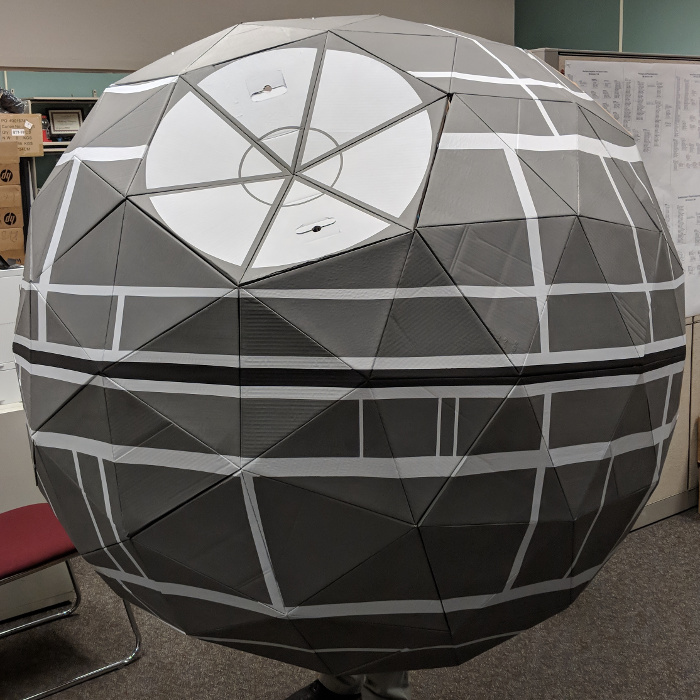

Constructing the Cardboard Geodesic Dome
Supplies
- Cardboard: LOTS of cardboard
- Posterboard, for templates
-
Paint
- Dark grey
- Lighter grey
- Black
- 1/4" painter's tape
- Glue (we found wood glue worked well)
- Large binder clips
- PEX tubing, 19', and appropriate connectors
- 2 x 4 boards, 2 6' lengths
- Zip-ties
Optional, if you want to be able to disassemble it without destroying it later
- Cardboard screws, such as the ones from Makedo, and the tools to use them
Tools
- Box cutter
- Yard stick
- Paint brush
- PEX cutter, or something else to trim the PEX to size
- Drill and bits
We made a 6' diameter Death Star. If you want to go smaller, you'll have to recalculate your material sizes and dimensions appropriately.
Instructions
-
Create your templates.
- We used a geodesic dome calculator to figure out what sizes we needed. For a 6' diameter dome, we needed "X", an isosceles triangle 12.95" high, with a 14.53" base and 14.85" sides, plus "Y", an isosceles triangle 10.23" high, with a 14.53" base and 10.23" sides. Trace these shapes on posterboard.
- Extend the sides of the triangles by 2 or 3 inches to create a flap on each edge, which you'll either glue or screw together during the assembly phase.
- Cut out the templates.
- Create your triangle panels. For each panel:
- Trace the template onto a piece of cardboard. If you use cardboard boxes, you can position the template so that the bottom of one side is on a fold, making a little less work for yourself later.
- Mark where the sides of the triangle are, as you'll need to bend the panel on the sides later.
- Cut out the panel.
- Very lightly score the sides of the triangle, then use the back of a marker or something to push down along the scores.
- Bend the flaps back at the scores.
- You will need 45 X triangles and 30 Y triangles. This will take awhile.
- Note that double thickness cardboard, such as used in boxes for shipping servers, is extremely difficult to work with in the construction phase. Avoid if possible.
- Paint the triangles dark grey.
-
Assemble the triangles into hexagons and pentagons following the "Dome Diagram" on this extremely helpful Instructable, which gave us our general idea of how to do all this.
- We assembled ours in a different order, choosing to assemble all the individual hexagons, pentagons, and half hexagons first.
- We used wood glue to glue these together and the large binder clips to hold them together while they dried.
-
Assemble the entire geodesic dome.
- If you want the dome to be disassemble-able, first label all the hexagons/pentagons with a number, and then record on the sides what panel number each side attaches to.
- We worked from one side of the dome to the other.
- Use the cardboard screws at this point if you want to be able to take it apart. Otherwise more glue and binder clips would be fine.
- Stabilize the dome.
- Bend the PEX tubing into a circle that matches the outer rim of your dome and secure it with the connector. You'll probably need to trim a bit off to get it the right size.
- Punch holes in the cardboard of the dome close to the folded edge of each outer triangular panel. We did 3 holes per outer panel; one in the center and one on each end.
- Thread zip-ties through the cardboard and secure them around the PEX circle. This gives you something to hold onto that won't rip and helps stabilize the dome.
- Drill 2 holes in the ends of your 2x4s large enough for your zip ties to fit through, plus similarly-sized holes in the center of each board.
- Thread zip-ties through the boards and attach them around the PEX plus attach the boards to each other. This will help the dome stay more circular while it's hung, although ours was still a bit squished on the bottom.
- Paint the dome, using the painter's tape to make sharp lines. I highly recommend finding an abstract drawing for a guide, because painting something like this (which we did in fact use for our guide) is going to be a whole lot easier than painting something like this.
{kind=link}
{kind=link}
Congratulations! You now have an amazing-looking cardboard Death Star! Honestly at this point it was already incredible, and we hung it up and just admired it for awhile. Use the 2x4s to mount the thing. In our case we were hanging it off of a cubicle wall, so we used metal hooks similar to over-the-door wreath-hangers. 